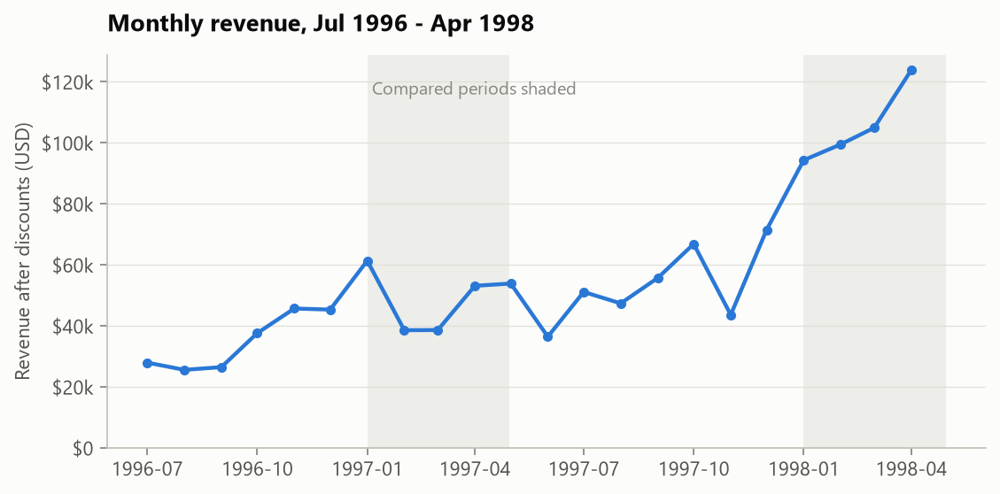
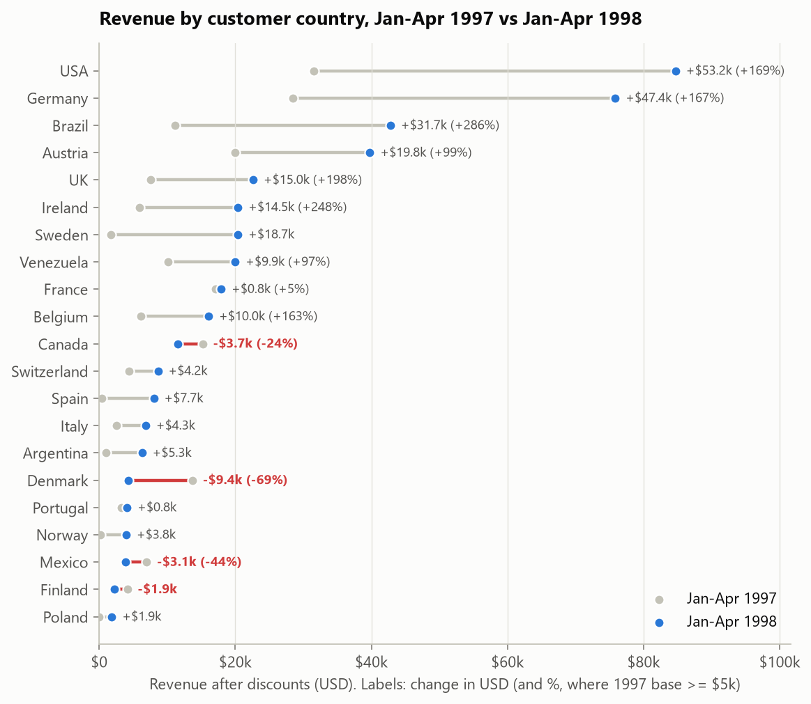
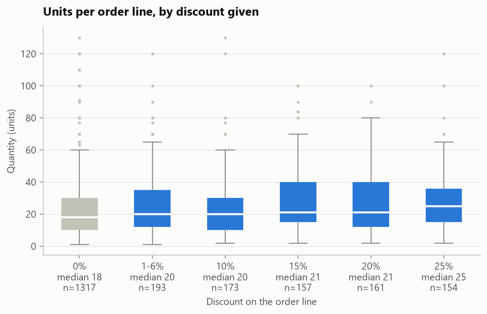
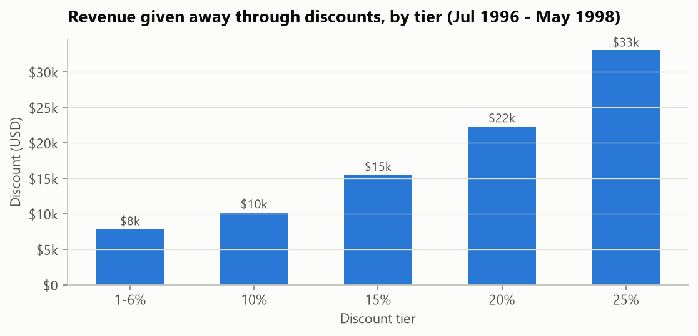
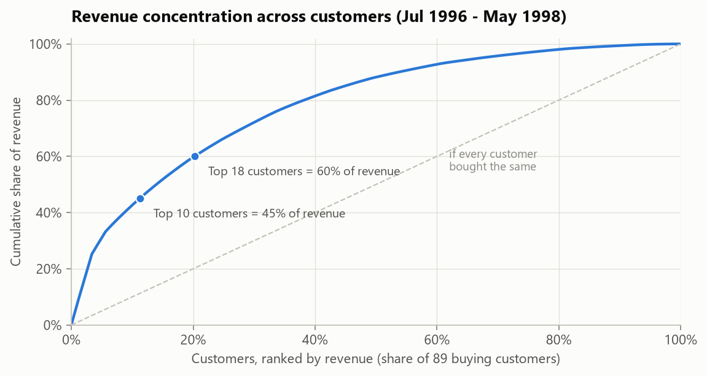
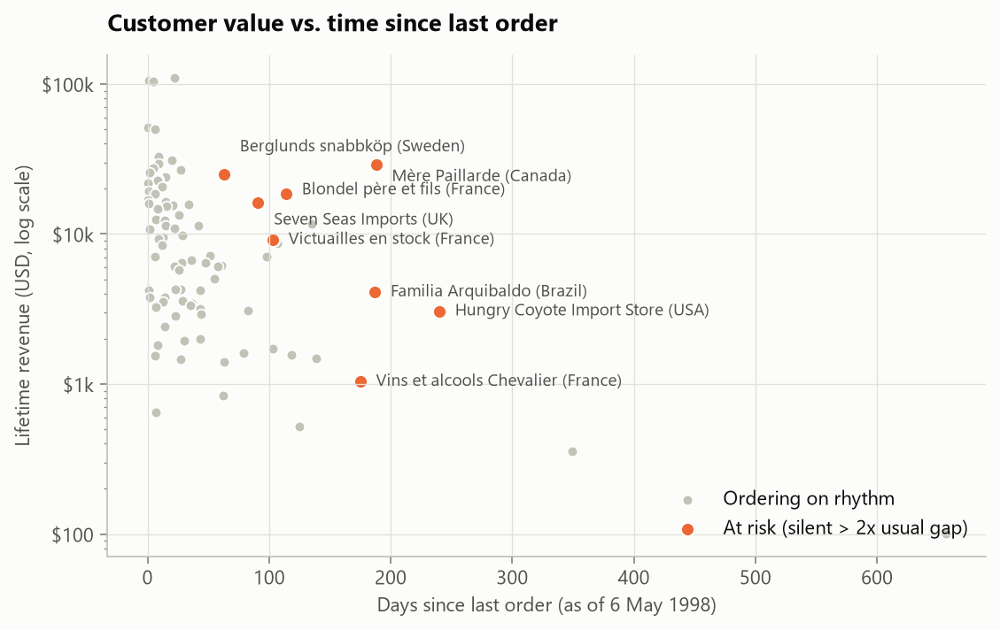
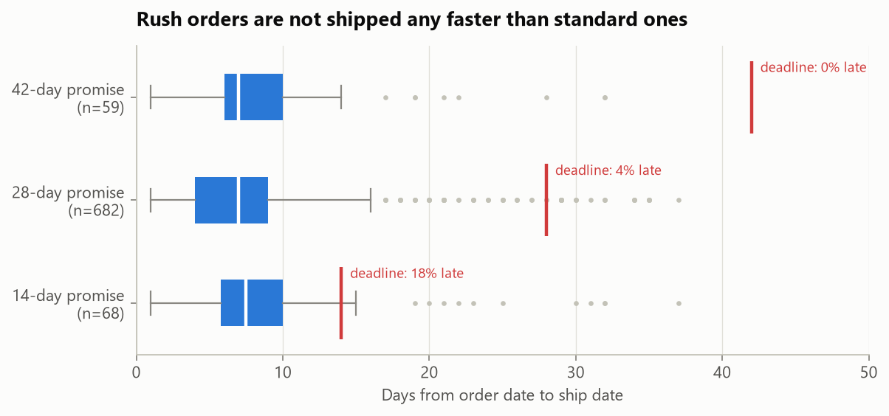
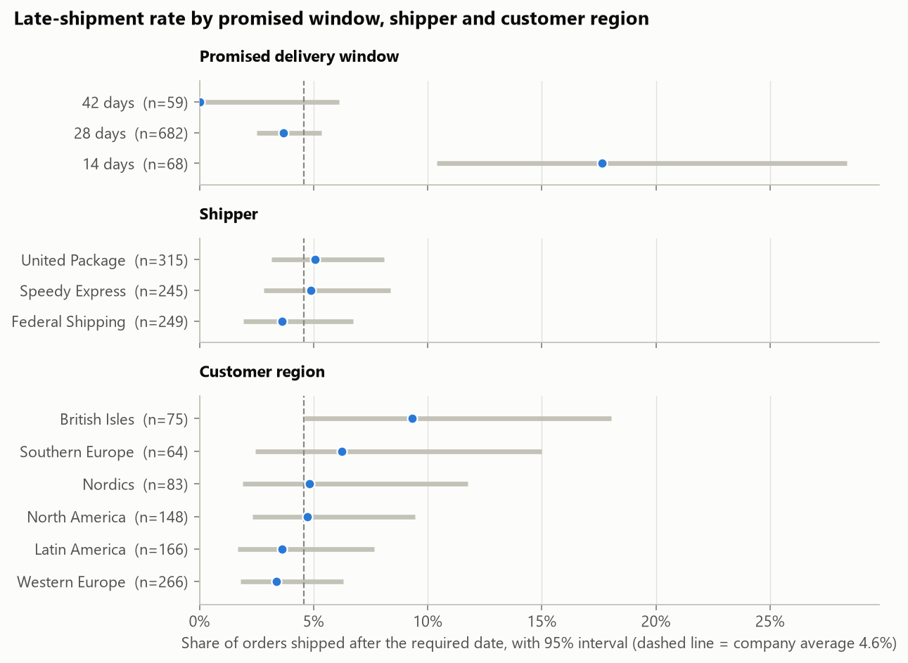

Northwind Traders: Where to Grow, What to Fix
A business review for the management team, built from 830 orders (2,155 order lines) placed between 4 July 1996 and 6 May 1998.
Summary for the manager
- The business is growing fast. Revenue in Jan–Apr 1998 was $422k, 2.2 times the $191k of Jan–Apr 1997. The USA, Germany and Brazil produced 57% of that growth.
- Country “declines” are really lost accounts. Canada, Mexico and Finland shrank because one major customer in each stopped or slowed ordering.
- Deep discounts don't buy much extra volume. Order lines at 15–25% off are only slightly bigger than lines at 5–10% off, yet those tiers account for 80% of the $88.7k given away. Capping discounts at 10% could have kept up to $36k.
- Revenue is concentrated, and 8 regular customers have gone quiet. The top 10 customers produce 45% of revenue. Eight customers who used to order regularly have now been silent for more than twice their usual gap; they spent $51.8k in the past 12 months.
- Shipping is reliable overall, except rush orders. 95.4% of orders ship on time, but orders with a 14-day deadline are late 18% of the time because they are not packed or shipped any faster than standard orders.
Which customer markets are growing or shrinking, and where should sales attention go?
Why it matters
Sales staff and marketing budget are limited. Knowing which countries are growing, which are stalling, and why tells the manager where to invest and where a market needs rescuing.
Approach
The data covers only part of 1996 (from July) and part of 1998 (to 6 May), so comparing calendar-year totals would be misleading. Instead we compare the same four complete months, January–April, in 1997 and 1998. Each order is assigned to the customer's country. For every country that lost revenue we then looked at which individual customers drove the change.


| Shrinking or flat market | Jan–Apr 1997 | Jan–Apr 1998 | What drove it |
|---|---|---|---|
| Denmark | $13,706 | $4,284 | Simons bistro: $11,188 → $0 in the window (it ordered again on 6 May 1998) |
| Canada | $15,211 | $11,526 | Mère Paillarde: $10,420 → $0. No orders since Oct 1997 (see Q3) |
| Mexico | $6,965 | $3,885 | Tortuga Restaurante: $4,150 → $1,514 |
| Finland | $4,132 | $2,257 | Wartian Herkku: $4,132 → $270 |
| France | $17,084 | $17,929 | 4 new customers won, but established accounts shrank (Blondel père et fils, Folies gourmandes, La maison d'Asie) |
Main finding
Revenue more than doubled (+121%) between Jan–Apr 1997 and Jan–Apr 1998, and 17 of 21 countries grew. The USA (+$53k), Germany (+$47k) and Brazil (+$32k) produced 57% of all growth. The four markets that shrank, and flat France, are small. In every case the drop traces back to one or two individual customers ordering less or stopping, not to a broad market downturn.
Business implication
Put new sales effort into the three engines of growth (USA, Germany, Brazil), where more customers are already buying (USA 7 → 11, Germany 8 → 11). For the weak markets, the fix is account management, not market strategy. A call to Mère Paillarde in Canada or to the lapsed French accounts is cheaper than a country-level campaign. France deserves attention because it is winning new customers but losing established ones.
Caveat: four months per year is a short window, and small markets depend on one or two customers. Simons bistro (Denmark) shows the risk: it placed an order just after the window closed, so Denmark's decline may be partly timing.
Are discounts winning more business, or just giving away revenue?
Why it matters
Every discount dollar comes straight out of revenue. Discounts are worth it only if they get customers to buy more. If a 25% discount sells the same quantity as a 5% discount, the extra 20 points are money left on the table.
Approach
We grouped all 2,155 order lines by the discount applied (Northwind uses 5, 10, 15, 20 and 25% tiers; 8 lines with unusual 1–6% discounts are grouped with 5%). For each tier we compared the quantity sold per line and added up the dollars given away. We then estimated what would have been kept if every discount above 10% had been capped at 10%.


| Discount tier | Order lines | Median units | Mean units | Discount given | Share of all discounts |
|---|---|---|---|---|---|
| None | 1,317 | 18 | 21.7 | $0 | 0% |
| 1–6% | 193 | 20 | 26.9 | $7,782 | 8.8% |
| 10% | 173 | 20 | 25.2 | $10,167 | 11.5% |
| 15% | 157 | 21 | 28.4 | $15,442 | 17.4% |
| 20% | 161 | 21 | 27.0 | $22,295 | 25.1% |
| 25% | 154 | 25 | 28.2 | $32,980 | 37.2% |
Main finding
Northwind gave away $88.7k in discounts (6.5% of gross sales) on 39% of order lines. Discounted lines are somewhat larger than undiscounted ones (mean 25–28 units vs 22). But deeper discounts barely move volume: the typical 15–25% line is only 1–5 units bigger than a 5–10% line. Meanwhile the 15–25% tiers account for 80% of all discount dollars.
Business implication
Introduce a discount policy that caps routine discounts at 10% and requires approval for anything deeper. If volumes had held, capping all discounts at 10% would have kept about $36.1k (on 645 order lines), roughly 2.9% of total revenue, with no change in the product range or customer base.
Caveat: this compares order lines; it is not a controlled experiment. Larger or more loyal customers may get bigger discounts because they buy more, and some might buy less, or leave, if their discount were cut. The $36k is therefore an upper bound. A safer first step is to test the cap on new or low-volume accounts.
How dependent are we on a few big customers, and which valuable customers are drifting away?
Why it matters
If a small number of customers produce most of the revenue, losing even one is a serious risk. Spotting customers who have stopped ordering before they are gone for good gives the sales team a chance to win them back.
Approach
We ranked the 89 buying customers by total revenue and plotted the cumulative share (a Pareto curve). To find customers drifting away, we compared each customer's days since last order (as of 6 May 1998, the last date in the data) with its own usual gap between orders (median of its past gaps). A customer is flagged at risk if it has ordered at least 3 times, has been silent for 60+ days, and has been silent for more than twice its usual gap. Using each customer's own rhythm avoids flagging naturally infrequent buyers.


| At-risk customer | Country | Lifetime revenue | Orders | Usual gap (days) | Days silent |
|---|---|---|---|---|---|
| Mère Paillarde | Canada | $28,872 | 13 | 18 | 188 |
| Berglunds snabbköp | Sweden | $24,928 | 18 | 26 | 63 |
| Blondel père et fils | France | $18,534 | 11 | 43 | 114 |
| Seven Seas Imports | UK | $16,215 | 9 | 29 | 91 |
| Victuailles en stock | France | $9,182 | 10 | 19 | 103 |
| Familia Arquibaldo | Brazil | $4,108 | 7 | 64 | 187 |
| Hungry Coyote Import Store | USA | $3,063 | 5 | 38 | 240 |
| Vins et alcools Chevalier | France | $1,040 | 4 | 27 | 175 |
Main finding
Revenue is highly concentrated. The top 10 customers (11% of the base) generate 45% of revenue, and the top 18 (20%) generate 60%. The bottom half of customers together produce only 12%. Eight customers have gone quiet; together they spent $51.8k in the 12 months before 6 May 1998 ($105.9k over the whole period). The most urgent is Mère Paillarde, the 9th-largest customer: it used to order every ~18 days and has now been silent for 188 days. That one account explains Canada's decline in Q1. Three of the eight are French, which helps explain why France stalled despite winning new customers.
Business implication
Assign a named account manager to the top ~18 customers who drive 60% of revenue, and set up a simple “silent customer” alert that fires when a customer goes twice its normal gap without ordering. The eight customers above are this month's call list, starting with Mère Paillarde, Berglunds snabbköp and Blondel père et fils.
Caveat: the 2× rule and 60-day minimum are judgment calls; a stricter or looser rule changes the list at the margin. The data cannot tell us why a customer went quiet (moved to a competitor, closed, seasonal), which is exactly what the call should find out.
Are we shipping on time, and what causes late shipments?
Why it matters
Each order carries a required date the customer was promised. Shipping late damages the relationships that Q3 shows the business depends on. Knowing whether lateness comes from a shipper, a region or the type of order tells the manager what to fix.
Approach
For the 809 shipped orders we measured days from order to shipment and flagged an order as late if it shipped after its required date. We compared late rates by promised window (Northwind uses 14-, 28- and 42-day deadlines), shipper and customer region. Because some groups are small, each rate is shown with a 95% confidence interval: if two intervals overlap heavily, the difference may just be chance. The 21 unshipped orders were all placed after 8 April 1998 and none was past its required date on 6 May, so they are excluded rather than counted as late.


| Shipper | Orders | Late rate | Median days to ship | Avg freight / order | Freight per $100 of sales |
|---|---|---|---|---|---|
| Federal Shipping | 249 | 3.6% | 6 | $81.78 | $5.40 |
| Speedy Express | 245 | 4.9% | 7 | $65.45 | $4.63 |
| United Package | 315 | 5.1% | 7 | $87.48 | $5.33 |
Main finding
Shipping is reliable overall: 95.4% of orders ship on time (37 late out of 809) and the typical order ships in 7 days. The big exception is rush orders. Orders promised within 14 days are late 17.6% of the time versus 3.7% for standard 28-day orders, and they make up a third of all late orders even though they are only 8% of volume. The cause is visible in the first chart: rush orders take a median of 7.5 days to ship, no faster than standard orders, so any delay pushes them past the deadline. Differences between shippers are small and within the margin of error (3.6–5.1%). Speedy Express is the cheapest per dollar shipped. The British Isles have the highest regional late rate (9.3%), and this holds for standard orders too (9.7%), but with only 75 orders the evidence is suggestive, not conclusive.
Business implication
The fix is internal, not a shipper change. Flag 14-day orders at order entry and move them to the front of the packing queue. Cutting their late rate to the standard 3.7% would eliminate about 10 of 37 late shipments. Choose the shipper on cost rather than reliability, since reliability is similar. Speedy Express ships at about $4.63 per $100 of sales vs $5.33–$5.40 for the others. Monitor UK and Irish orders for the next quarter to confirm whether the higher late rate is real.
Caveat: we only know the ship date, not the delivery date, so “late” here means “shipped after the required date”. Freight costs depend on weight and distance, which are not in the data, so the per-$100 comparison is a rough guide.